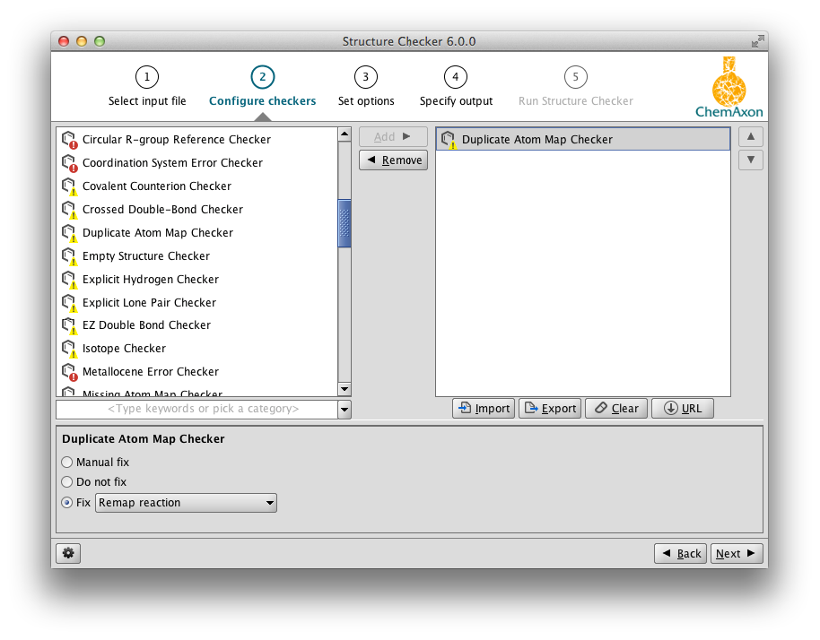
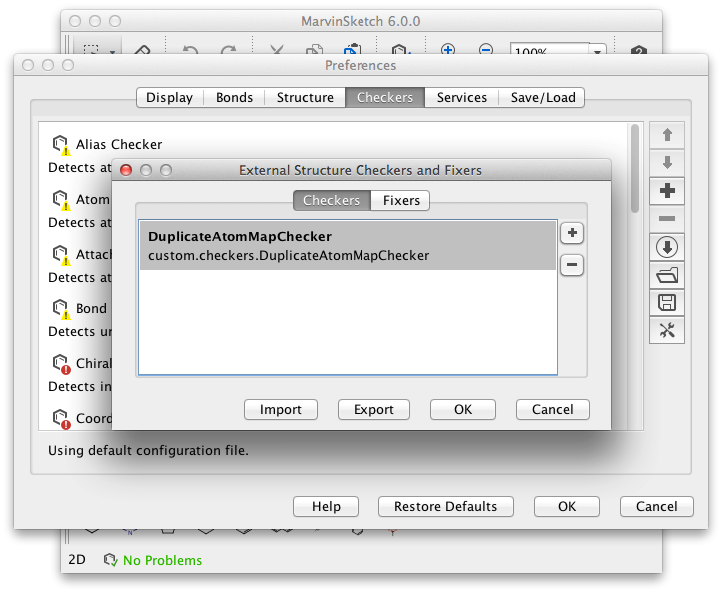

| ← Create Graphical User Interface for Checker Options | ↑ Structure Checker Developer's Guide |
The new Checker has a custom error code, so the stock fixers cannot recognize it. You can use the
@FixesExternal annotation to bind a fixer to a result.
If you want to use a ChemAxon fixer to fix the problem, the easiest way is to create a subclass of
it, and use the @FixesExternal annotation.
Download the example and find "ExternalRemoveAtomMapFixer.java".
@FixesExternal(DuplicateAtomMapChecker.DUPLICATE_ATOM_MAP_CHECKER_ERROR)
@FixerInfo(
name = "Remove duplicated atom maps",
description = "Removes duplicated atom maps.",
actionStringToken = "removeduplicatedmaps")
public class ExternalRemoveAtomMapFixer extends RemoveAtomMapFixer {
}
To implement a new Fixer, you have to subclass the AbstractStructureFixer class, add the annotations as
above, and implement the fix method.
Download the example and find "RemapReactionFixer.java".
@FixesExternal(DuplicateAtomMapChecker.DUPLICATE_ATOM_MAP_CHECKER_ERROR)
@FixerInfo(name = "Remap reaction",
description = "Remaps the reaction with AutoMapper",
actionStringToken = "remapreaction")
public class RemapReactionFixer extends AbstractStructureFixer {
@Override
public boolean fix(StructureCheckerResult result) {
boolean success = false;
// check if we are trying to fix a reaction
if (result.getMolecule().isReaction()) {
// clear the current mapping
AutoMapper.clearMaps(RxnMolecule.getReaction(result.getMolecule()));
try {
// try to get complete mapping
AutoMapper.map(
RxnMolecule.getReaction(result.getMolecule()),
AutoMapper.COMPLETE);
success = true;
} catch (AutoMapperException e) {
// AutoMapper failed
}
}
return success;
}
}
Export all the classes to a JAR file, and use MarvinSketch Preferences to add the Checker and Fixers from it. Imported Checkers and Fixers will be available in all applications using Structure Checker.
 
| ← Create Graphical User Interface for Checker Options | ↑ Structure Checker Developer's Guide |
Structure Checker Developer's Guide
List of available checkers
Structure Checker GUI
structurecheck Command Line Application
Structure Checker in MarvinSketch